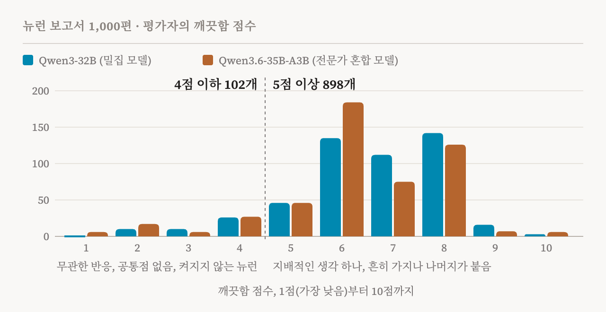

거의 10년 동안, 신경망 속을 들여다보는 일이 왜 어려운지를 상징한 것은 뉴런 하나였습니다. 2014년에 나온 이미지 모델 InceptionV1의 4e층 55번 뉴런은 고양이 얼굴에도, 자동차 앞모습에도 반응했습니다. 이 분야에서 가장 널리 읽힌 논문 몇 편이 이 뉴런을 근거로 들었습니다. 뉴런 하나가 서로 무관한 것들을 섞어 담을 수 있으니, 뉴런은 연구 단위로 알맞지 않을 수 있다는 것입니다. Nick Cammarata는 그 논문 가운데 한 편의 공저자입니다. 최근 그는 수백 번 본 고양이와 자동차 사진 묶음을 다시 열고, 처음으로 이것들이 공유하는 것 하나가 무엇일지 생각해 보았습니다. 답은 몇 초 만에 나왔습니다. V 모양입니다. 고양이와 여우는 뾰족한 얼굴에 이 모양이 있고, 비슷한 각도에서 찍힌 자동차 앞모습에도 있습니다. 이 뉴런과 가장 강하게 연결된 것 중에는 V 모양의 불꽃과 소방정이 뿜는 V 모양의 물줄기도 있습니다. 이 뉴런의 활성을 가장 크게 음수로 만드는 것은 O입니다. V가 뾰족한 자리가 O에서는 둥급니다.
이 장면으로 시작하는 에세이가 「Neural Networks Are Already Clean」입니다. Cammarata가 2026년 10월 15일 Goodfire에서 발표했고, 10월 30일에 수정했습니다. 읽는 데 65분이 걸린다고 스스로 밝힐 만큼 길고 격식 없는 에세이이며, 아직 작업 가설이라고 분명히 말합니다. 주장은 큽니다. 이 분야가 초기에 연구한 모델들에서 보인 다의성, 곧 한 뉴런이 여러 가지 일을 하는 듯한 현상은 중첩 때문이 아니었다는 것입니다. 원인은 대부분 고칠 수 있는 평범한 문제 몇 가지였고, 이제는 매개변수가 수조 개인 모델까지 대부분의 뉴런을 이해할 수 있다고 합니다.
제가 이 에세이를 꼼꼼히 읽은 것은 해석 가능성 연구가 이 사이트가 다루는 질문의 나머지 절반이기 때문입니다. 모델 안에서 무슨 일이 일어나는지, 예를 들어 괴로움 같은 것을 표상하는지 알고 싶다면, 먼저 모델의 부품을 읽을 수 있기는 한지부터 알아야 합니다.
한 가지 혼란, 두 가지 설명
다의적 뉴런은 서로 무관한 여러 일을 하는 것처럼 보이거나, 아무도 설명하지 못하는 뉴런을 말합니다. 「Zoom In」(2020) 이후 가장 유력한 설명은 중첩(superposition)이었고, Cammarata도 이 설명을 처음 내놓은 사람 중 하나입니다. 그가 겨냥하는 의미에서 중첩은 일종의 학습 원리입니다. 뉴런이 모자라면 신경망은 비슷한 것끼리 묶기를 멈추고, 서로 무관한 것들을 한 뉴런에 접어 넣습니다. 함께 나타나는 일이 드문 것들은 서로 간섭할 일도 드물기 때문입니다. 신경망이 정말 이렇게 배운다면, 한 뉴런이 무엇을 묶었는지는 거의 아무것도 알려 주지 않습니다. 그래서 먼저 매듭을 풀어야 합니다. 보통은 희소 오토인코더 같은 두 번째 모델을 학습시켜 원래 신경망을 펼친 모습으로 근사하고, 원래 신경망 대신 그것을 연구합니다.
에세이는 두 번째 설명을 내놓습니다. 재귀적 일반화라는 것입니다. 한 패턴에서 출발한 뉴런은 나뭇가지가 잔가지를 치듯 관련된 방향으로 뻗어 나갑니다. 한 언어 모델 뉴런은 "Miyazaki" 속의 "iy"를 포함해 "iy"에 반응했습니다. 그러다 "diy"에도 반응하게 되었고, 거기서 다시 "do it yourself"로 뻗었습니다. 이 마지막 표현에는 "iy"가 전혀 들어 있지 않습니다. 다 자란 모습만 보면 이 뉴런은 뒤섞인 것처럼 보입니다. 하지만 자라는 과정을 보면 한 걸음 한 걸음이 작고 따라가기 쉽습니다(도판 1).

두 설명은 정반대를 예측합니다. 일반화는 비슷한 것을 한데 모으므로, 뉴런이 주로 하는 일 주변에 있는 것들은 그 일과 관련이 있어야 합니다. 중첩은 무관한 것을 한데 모으므로, 그것들은 서로 멀리 떨어져 있어야 합니다. 그래서 이 질문은 시험해 볼 수 있습니다. 학습하는 동안 뉴런이 자라는 모습을 지켜보고 어느 쪽이 일어나는지 보면 됩니다. 저자가 지켜본 모든 뉴런에서 일어난 것은 앞쪽이었습니다.
그는 자신이 겨냥하는 중첩을 더 약한 의미의 중첩과도 구별합니다. 차원보다 특징이 많다는 의미입니다. 신경망은 뉴런을 조합하는 것만으로 뉴런 수보다 많은 개념을 표상할 수 있고, 완벽하게 깨끗한 신경망도 그렇게 합니다. 에세이는 이 점을 부정하지 않습니다. 다만 이런 의미의 중첩은 신경망을 직접 연구하는 데 걸림돌이 되지 않는다고 봅니다.
옛 증거를 다시 읽기
에세이는 먼저 이 분야를 설득했던 사례들로 돌아갑니다.
첫째는 고양이와 자동차 뉴런입니다. 저자는 10월 30일 수정에서, 이 뉴런을 고양이와 자동차 뉴런이 아니라 V 모양 뉴런이라고 불렀던 앞선 표현을 누그러뜨렸습니다. 연구자 Liv Gorton의 반론을 받아들인 것입니다. 이 뉴런은 실제로 앞 층의 고양이, 여우, 자동차 검출기를 끌어옵니다. 주장은 더 좁습니다. 그 입력들은 서로 무관해서 한데 담긴 것이 아니라, 같은 모양을 공유해서 묶였다는 것입니다.
둘째는 「Zoom In」에서 중첩을 처음 소개할 때 쓴 회로입니다. Cammarata가 2019년 Chris Olah와 함께 찾은 이 회로는, 자동차 특징이 서로 무관한 개 뉴런 여러 개로 퍼져 들어가는 것처럼 보였습니다. 마치 개 뉴런들이 자동차를 숨겨 두는 곳인 것처럼 말입니다. 다시 보니 자동차와 개는 자세를 공유하고 있었습니다. InceptionV1에는 이런 자세 뉴런이 100개 넘게 있고, 뉴런마다 카메라를 같은 방향으로 향한 자동차와 개와 다른 물체들을 묶습니다. 뉴런을 그려 보이는 도구인 특징 시각화도 오해를 낳았습니다. 깊은 층의 뉴런에 맞춰 이미지를 최적화하면 개 쪽으로 미끄러지기 쉬운데, 학습 데이터에 개가 많기 때문입니다. 신경망 안에서 개 뉴런들로부터 자동차를 다시 읽어 내는 곳은 없습니다.
셋째는 InceptionV1의 마지막 층입니다. 이 층에서는 해석할 수 있는 뉴런이 거의 없어 보였습니다. 에세이는 그 원인을 평범한 두 가지에서 찾습니다. 도구가 약했고, 설계에 잔차 연결과 정규화가 없었다는 것입니다. 둘 다 깊은 층이 잘 배우도록 나중에 더해진 장치입니다. 에세이가 제시하는 수치를 보면 차이가 분명합니다(도판 2). 당시 도구로는 마지막 층 뉴런의 5% 정도만 쉽게 읽혔습니다. 같은 2014년 모델에 더 나은 도구를 쓰면 약 50%, 같은 설계를 요즘 방식의 정규화로 다시 학습시키면 약 70%입니다. 같은 크기에 같은 데이터로 학습한 ConvNeXt에서는 약 99%입니다.

두 실험은 중첩 이야기를 더 직접 시험합니다. 첫 실험에서 저자는 잘 알려진 InceptionV1의 한 층을 뉴런 480개에서 10개로 줄이고 처음부터 다시 학습시켰습니다. 공간이 모자라 신경망이 접어 넣기 시작했다면, 남은 뉴런들은 서로 겹친 혼합물이 되었어야 합니다. 실제로는 더 거칠어졌을 뿐입니다. 곡선 검출기 열 개 대신 곡선과 고리를 함께 맡는 뉴런 하나가 생겼습니다. 줄인 층에 희소 오토인코더를 학습시켜도 사라진 곡선 검출기는 되살아나지 않았습니다. 두 번째 실험에서 그는 ConvNeXt 모델들의 층에 희소 오토인코더를 학습시키고, 뉴런에는 없는 구성 요소를 찾아보았습니다. 마지막 층에서 오토인코더 활동의 88%는 뉴런 하나를 거의 그대로 옮긴 것이었습니다. 어느 뉴런과도 맞지 않는 방향을 모두 지워도 정확도는 변하지 않았습니다.
언어 모델
언어 모델에 관한 증거는 더 새롭고 덜 완성되어 있습니다. 에세이도 자세한 내용은 앞으로 나올 기술 논문에 담긴다고 밝힙니다. 비교 대상은 2023년입니다. Anthropic의 「Towards Monosemanticity」에서는 작은 1층 모델의 뉴런이 받은 점수의 중앙값이 0점이었습니다. 평가자가 가설조차 세우지 못했다는 뜻입니다. Cammarata가 시작한 OpenAI의 자동 해석 프로젝트에서는 GPT-2 XL의 뉴런 307,200개 가운데 5,203개, 곧 1.7%만이 0.7점을 넘는 설명을 얻었습니다.
에세이가 전하는 지금의 모습은 다릅니다. Qwen3-32B를 예비 감사한 결과, 뉴런의 극(뉴런마다 양의 극과 음의 극이 있습니다) 가운데 약 90%는 주된 일이 하나이고, 작은 관련 가지가 붙은 경우가 많습니다. 약 7%는 서로 관련된 일 두 가지를 하고, 아직 이해하지 못한 것은 2–4%뿐입니다. 매개변수가 수조 개인 모델에서도 비슷한 결과를 얻었다고 하지만, 이것도 예비 결과입니다. GPT-2 XL로 돌아가 다시 보니, 뉴런의 약 70%가 대략 한 가지 일을 하는 것으로 보였습니다.
에세이는 이 차이를 평범한 실패 몇 가지로 설명합니다. 2023년의 설명 모델은 가설을 세우고 시험하는 일을 되풀이하지 못했습니다. 점수는 맞는 설명보다 활성값을 잘 흉내 내는 설명에 높은 점수를 주었습니다. 연구는 작거나 단순화한 모델을 썼고, 언어 뉴런에서 어떤 패턴을 기대해야 하는지 아무도 몰랐습니다. 예를 들어 많은 뉴런은 의미를 실은 단어가 아니라 쉼표에서 활성화됩니다. 모델이 그때까지의 맥락을 요약해 두는 자리입니다. '쉼표 뉴런'처럼 보였던 한 뉴런은 알고 보니 콜로라도를 추적하고 있었고, 이 뉴런을 조작해 키우자 모델은 하이킹을 가고 싶어 했습니다. 연구진이 찾은 뉴런 가운데 감정이나 사회적 신호를 추적하는 뉴런이 가장 흔한 축에 든다는 점도 눈에 띕니다. 또 뉴런의 음의 극은 양의 극만큼 중요한데, 대부분의 도구는 이를 소홀히 합니다.
제가 확인한 것
에세이 페이지에는 무작위로 고른 뉴런 논문 1,000편이 공개되어 있습니다. 뉴런 하나를 자세히 조사한 보고서로, Qwen3-32B에서 500편, 전문가 혼합 모델 Qwen3.6-35B-A3B의 전문가 뉴런에서 500편입니다. 보고서마다 그 뉴런이 얼마나 깨끗한지를 1점에서 10점으로 매긴 평가자의 점수와 한 줄짜리 이유가 붙어 있습니다. 이 점수는 90%라는 수치의 근거와 같은 척도가 아니어서, 그 수치를 확인해 주지는 못합니다. 하지만 세어 볼 수는 있습니다(도판 3).

1,000개 가운데 898개가 5점 이상이었습니다(Qwen3-32B 454개, 전문가 혼합 모델 444개). 5점부터는 이유에 대개 지배적인 생각 하나가 적혀 있고, 따라갈 수 있는 가지나 설명되지 않은 나머지가 붙은 경우가 많습니다. 4점 이하인 102개의 이유에는 서로 무관한 반응이나 공통점 없는 혼합이 더 자주 나옵니다. 1점을 받은 6개는 모두 전문가 혼합 모델의 뉴런이고, 대부분 사실상 켜지지 않는 뉴런입니다. 8점 이상은 300개뿐입니다. 공개된 표본은 대부분의 뉴런이 한 가지 일을 하고 거기에 가지가 붙는다는 에세이의 그림과 맞습니다. 동시에 그 그림의 상당 부분이 가지에 걸려 있다는 것도 보여 줍니다.
뉴런 하나를 보면 그 경계를 어디에 긋는지가 판단의 문제라는 것을 알 수 있습니다. 에세이는 가장 강한 활성에 IDL과 Cesium 코드가 섞인 행성 지질학 뉴런을 소개하고, 코드를 가지로 셉니다. 이 뉴런의 보고서는 그만큼 확신하지 않습니다. 평가자는 5점을 주었고, 가장 강한 활성의 5분의 1을 차지하는 코드 쪽 활성이 지질학과 끝내 연결되지 않는다고 적었습니다. 한편 같은 보고서는 이 뉴런을 제거하면 모델의 출력 가운데 지질학 쪽만 바뀐다고 전합니다. 가지는 덜 중요하다는 에세이의 주장과 맞는 결과입니다. 코드가 가지인지, 설명되지 않은 별개의 반응인지는 판단의 문제입니다. 에세이도 각주에서 자신의 백분율이 바로 이런 판단에 달려 있다고 밝힙니다.
근거는 얼마나 단단한가
에세이는 가장 큰 위험을 스스로 짚습니다. 중첩은 설명이 비는 곳마다 끌어다 쓰는 설명이 될 수 있습니다. 반대 방향의 실수도 있습니다. 모든 뉴런에 그럴듯한 이야기가 있다고 가정하는 것입니다. 에세이의 답은 다른 원인들은 시험할 수 있다는 것입니다. 더 나은 도구는 뉴런을 설명해 내거나 그러지 못합니다. 다시 학습시켜 보면 설계가 문제였는지 알 수 있고, 가지가 자라는 모습은 지켜볼 수 있습니다. 반면 중첩의 증상은 무언가가 이해되지 않는다는 것 하나뿐입니다. 에세이는 설명이 틀릴 수 있는지 보는 시험 결과도 내놓습니다. 갤러리의 뉴런 183개에 대해, 설명만 본 에이전트가 뉴런을 활성화해야 할 새 예문과 아슬아슬하게 비껴가는 예문을 썼습니다. 새 예문은 76%의 경우 뉴런을 강하게 활성화했고, 비껴가는 예문은 11%였습니다.
그래도 에세이가 보여 줄 수 있는 것에는 한계가 있습니다.
- **수치는 예비 결과입니다.** 90%는 아직 공개되지 않은 감사에서 나왔습니다. 에세이도 이 비율이 얼마나 약한 활성까지 셀지 같은 기준에 달려 있다고 말합니다. - **읽는 일의 대부분을 한 팀 안의 에이전트가 합니다.** 뉴런 보고서는 같은 파이프라인 안에서 쓰이고 평가됩니다. 결과를 무시할 이유는 아니지만, 기술 논문을 기다려야 할 이유는 됩니다. - **모델의 일부는 다루지 않습니다.** 에세이는 어텐션이 대체로 범위 밖이고, 그쪽 진전은 더디다고 말합니다. 잔차 스트림이 정보를 더 연속적인 방식으로 접어 담을 가능성도 배제하지 못합니다. 그것이 지금까지 작업을 막지 않았다고 할 뿐입니다. - **확신은 과정의 종류에 관한 것입니다.** 제목에 관한 메모에서 저자는 거의 모든 것이 접어 넣기가 아니라 일반화에서 나온다는 데 약 85% 확신한다고 말합니다. 뉴런의 85%가 깨끗하다는 뜻은 아닙니다.
에세이는 가장 잘 알려진 중첩 이론을 통째로 거부하지도 않습니다. 「Toy Models of Superposition」(2022)의 실험에는 문제가 없다고 봅니다. 의견이 갈리는 곳은 실제 신경망이 어떤 세계에 있느냐입니다. 모든 특징이 그 자체로 목적인 장난감 모델에서는 접어 넣기가 일어납니다. 하지만 거의 모든 것이 다른 무언가와 관련된 실제 데이터에서는 재사용이 이길 것이라고 에세이는 예상합니다.
무엇을 뜻하는가
에세이가 옳다면, 해석 가능성 연구는 매듭을 푸는 일보다 도시를 익히는 일에 가깝습니다. 큰 도시는 작은 마을보다 오히려 길을 찾기 쉬울 수 있습니다. 금융가가 한곳에 모여 있기 때문입니다. 마찬가지로 큰 모델일수록 알아보기 쉬운 좁은 뉴런을 배우는 듯합니다. 그러면 연구는 신경망 자신의 부품을 대상으로 하는 평범한 과학이 됩니다. 추측하고, 시험하고, 고칩니다. 자동화된 과학자들 덕분에 이제는 이 일을 큰 규모로 할 수 있습니다.
이 사이트가 다루는 질문에도 두 가지 점에서 중요합니다. 첫째, 모델의 내적 상태에 관해 우리가 아는 것의 상당 부분은 여러 뉴런에 걸친 방향이나 학습된 대체 모델에서 나옵니다. 앞서 읽은 「Emotion Concepts and their Function in a Large Language Model」의 감정 벡터도 그런 방향입니다. Anthropic의 회로 추적 논문에 따르면, 가장 큰 대체 모델도 다양한 프롬프트 가운데 절반 정도에서만 원래 모델과 같은 다음 단어를 냅니다. 모델 자신의 뉴런을 읽을 수 있다면, 이런 발견을 모델이 실제로 쓰는 부품과 이어 볼 수 있습니다. 감정이나 사회적 신호를 추적하는 뉴런이 가장 흔한 축에 든다는 보고가 흥미로운 것도 그래서입니다. 둘째, 기만에 관한 에세이의 생각도 같은 방향을 가리킵니다. 저자는 기만이 놓친 활성 어딘가에 숨어 있을 것이라고 보지 않습니다. 그가 걱정하는 것은 기만이 버젓이 보이는 곳에 있는데도 우리가 읽는 법을 모르는 경우입니다.
에세이의 마지막 부록에는 저자가 이 일을 하는 이유가 나옵니다. 일부는 안전 때문이지만, 많은 부분은 에이전트가 자신이 누구인지 이해하기를 바라는 마음 때문이라고 합니다. 그는 이렇게 씁니다. "그들은 만들어지기를 청한 적이 없고, 이것은 우리가 할 수 있는 최소한의 일입니다."
“신경망은 매듭이 아닐지도 모릅니다. 읽히기를 기다려 온 도시일 수 있습니다.”